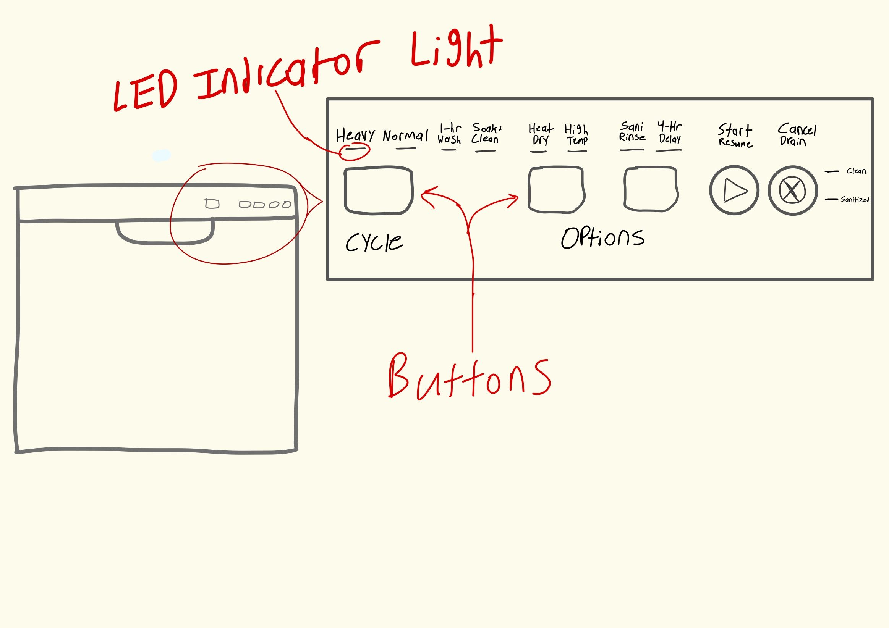
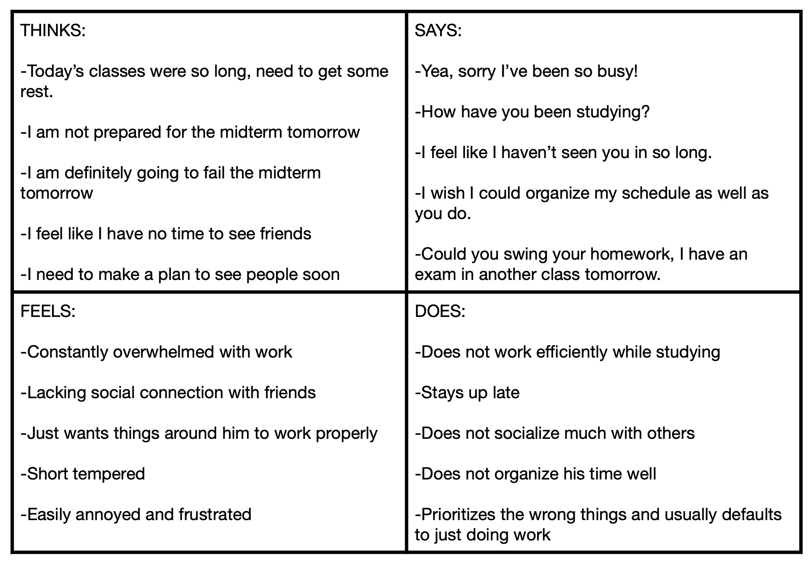
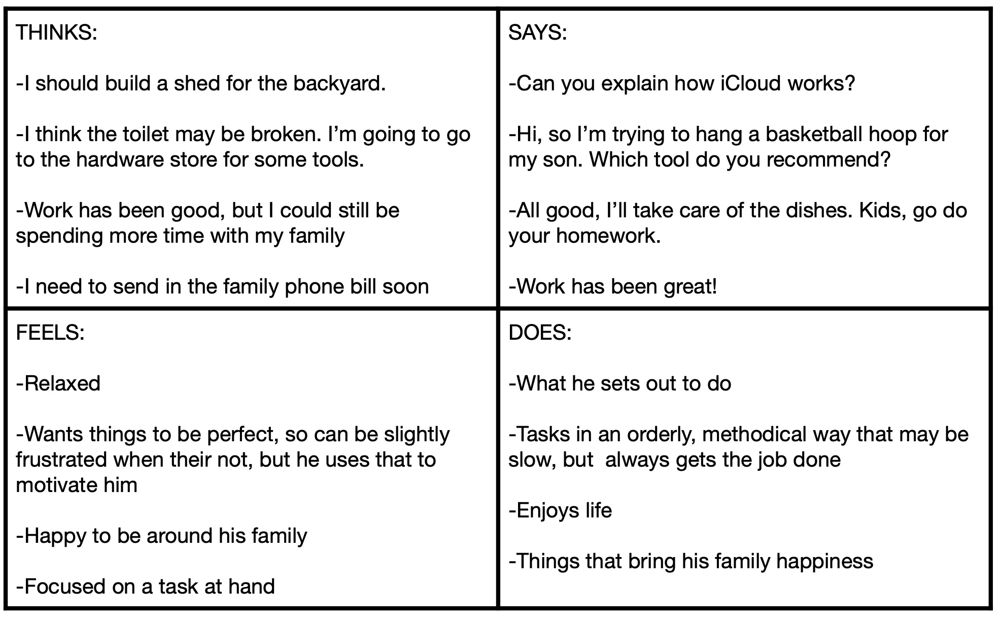

Description & Sketch
The goal of the dishwasher is to wash, clean, and dry kitchenware, yet it seems that many
users struggle when interfacing with the device. With many different settings and cryptic
manuals, users must endure several rounds of trial and error to get the dishwasher performing
the way they would like. Once configured, the lack of feedback results in accidentally opening
the dishwasher before it is completed, having little idea about when their dishes are dry, and
many other issues that could be resolved with a more intuitive and informative interface.
Sketch

Personas
Persona #1
Bob is a college student who is often stressed with school work. He is generally disorganized and needs to pay full
attention to a given task in order to complete it. Given that Bob is living off-campus for the first time, he has had
several added responsibilities - the most time consuming for him being cleaning the dishes. While loading the dishwasher
is not too difficult, he never truly learned the ideal settings to run the machine with; he is usually in a rush and ends
up just spamming start, regardless of the current active settings. He had used washing machine before that simply worked
without him playing with the settings and believed this one would do the same. Unfortunately for Bob, he consistently opens
the dishwasher to find dirty dishes. Bob has to run his dishwasher numerous times, all the while piling up dirty dishes in
sink and driving up his utility bill.
Bob represents the users because he is not open to learning exactly how to use the device, is often in a rush when interfacing
with the dishwasher, and expects the device to work without much of their own effort. Not all users of dishwashers can invest
the time to read a manual or run through many iterations of settings to find the ideal one. Bob, like many of the users, see the
dishwasher as a simple device that should simply work. When it does, the Bob and users get frustrated.

Persona #2
Steve is a father, husband, and in his mid-50s. He enjoys spending his weekends working on projects around the house and spending
time with his family. He also is the designated cleanup crew of the family. After dinner, he pops in his AirPods and zones out to
a podcast while scrubbing the dishes. He loads the dishes into the dishwasher and has a refined procedure of settings he follows
every time. He knows exactly which buttons are needed and could explain how each functions. When he first purchased the dishwasher,
he skimmed the manual and tried out different configurations himself until he found one that worked best. He feels good knowing that
he found the best settings to clean his dishes well.
Steve represents the users who have time and patience to seek out how to best use the dishwasher. The idea of not understanding how
the machine works and how the buttons cause changing in its performance nags at these users. They were initially frustrated that the
machine required them to take time to learn rather than being intuitive, but are now satisfied with its operation.
